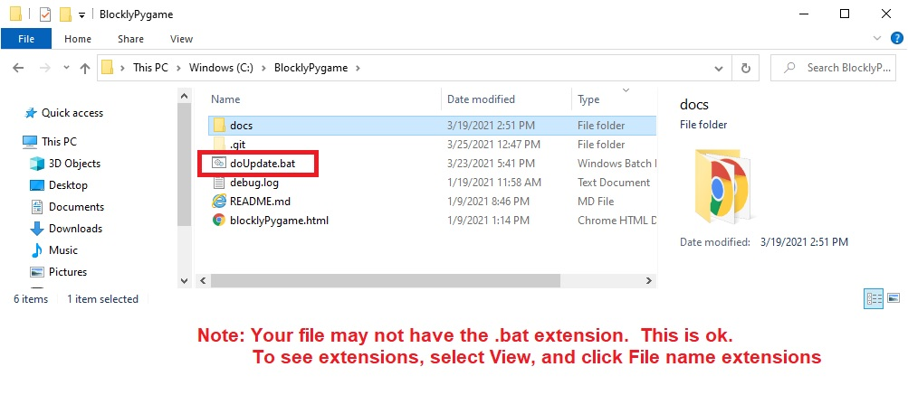

<H1>How to update blockly scriptcraft code</h1>
<h3>&nbsp;&nbsp;Double click on the doUpdate batchfile located in BlocklyPygame directory:  </h3><br>
<br>
<h3>&nbsp;&nbsp;It should open a cmd window and go to 100%</h3><br>
<hr>

